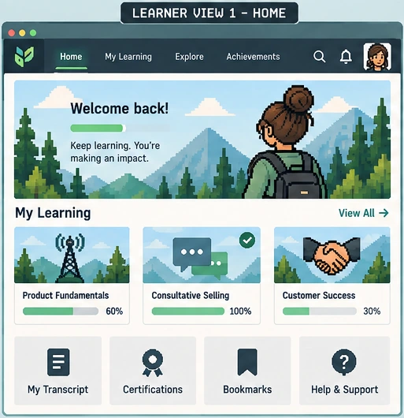

Set up
Learning plans, catalogs, content relationships, certifications, audience visibility, and learner-facing assets.
I helped move our learning environment from Absorb to Docebo. My work covered Docebo setup, learning-plan and content configuration, UAT for employees, partners, and customers, issue retesting, learner inbox support, support documentation, and post-launch reporting.
My Scope
My role connected learning-content administration with the learner experience: configure the structures, validate the journeys, and support people using the new platform.
Learning plans, catalogs, content relationships, certifications, audience visibility, and learner-facing assets.
Employee, partner, and customer journeys, renewals, navigation, completion behavior, mapping, and migrated content.
Issue tracking, retesting, inbox support, customer-response templates, documentation, reporting, and follow-up actions.
Migration + Configuration
I used Absorb as the baseline, helped configure the corresponding learning structures in Docebo, and checked what learners could actually see and do.

Access + discovery
A learner home connects audience access, assigned learning, progress, and support. Each connection needed checking after the move.
Review the catalogs, learning plans, and navigation learners already relied on.
Help configure audience visibility, content relationships, catalogs, and learner-facing assets.
Check employee, partner, and customer views for missing content, incorrect visibility, and broken navigation.
Learner-route / UAT simulator
Choose an audience, run the route, investigate the issue, then retest the fix. These reconstructed scenarios demonstrate my testing approach; they are not historical issue records.
Access + assignment
The employee can open the assigned catalog, launch the course, and record completion.
Run the sample route to compare the learner experience with the expected behavior.
Start with the learner view. A visible assignment alone does not confirm access.
No test recorded for this audience.
Audience Visibility
Employee, partner, and customer audiences did not all use the same catalogs or assignments, so I tested each learner type separately.
Migration Steps
I reviewed courses, learning plans, certifications, catalogs, and support patterns in Absorb before configuring and testing their Docebo counterparts.
Launch Support
Choose an area to see the support process and what it produced.
Learner + Customer Inbox
I responded to learner and customer issues, tracked recurring questions, and used those patterns to identify where guidance or processes needed to improve.
Learner questions, customer issues, access problems, and navigation confusion.
Troubleshoot, document, route, and identify repeated patterns.
Clearer responses and a better picture of what needed follow-up.
What I Completed
I helped set up learning structures, learning plans, content, catalogs, and learner-facing relationships in Docebo.
I tested employee, partner, and customer experiences, documented migration problems, and retested fixes.
I supported the learner inbox, documentation and email-template workflows, and immediate post-launch reporting and action planning.
I worked on learning content, learner experience, and LMS operations as part of a broader migration team. I did not own the full platform architecture.
Scope note: interface visuals and simulator scenarios are representative reconstructions. Example names, numbers, and test results are illustrative. Internal configurations, learner records, issue logs, credentials, proprietary screenshots, and company-specific implementation details are omitted.
Keep Exploring
Curriculum
Connected courses, assessment, LMS delivery, reporting, and maintenance.
Explore eLearning Pathways →Automation + Integration
System handoffs, automation, reporting, and operational workflows.
Explore System Integrations and Workflows →Learning Platforms
Content, pathways, certifications, learner support, reporting, and migration operations.
Explore LMS Administration →